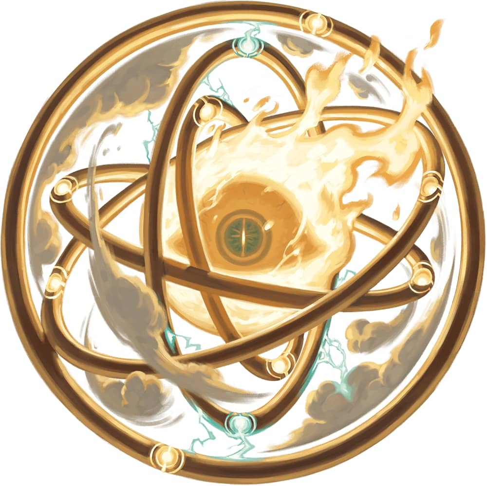

复仇天使，又称乌穆尔提Umulti，最初是更强大的神圣力量所派遣的星天神侍，负责为那些蒙冤者追寻正义与报应。若一位星天神侍在伸张正义期间犯下邪恶、不道德或卑劣的举动，它便可能遭受腐化，其恶行会令其肉体与灵魂逐渐凋零，转化为复仇天使。
复仇天使以冒犯神圣存在者为目标，无论其罪行轻重。这些天使的目的不是交涉，而是杀戮；复仇天使开口之时，只为告知受害者死期将至。
复仇天使的真实形态是一只巨大的燃烧之眼，位于五重同心圆环的中央。圆环通常由与其原先侍奉的神圣力量相契合的材质构成。例如，由火焰神�o创造的天使们，会显现火焰之环；而由财富之神�o创造的，则常以贵金属构成圆环。复仇天使常伪装成缄默而果决的人形，身披铠甲，手持利剑。
（译注：Umulti，词源拉丁语Ultio，意为复仇、报复；该天使的形象来自以西结书的座天使Ophanim）
许多凡人会向天使祈祷，他们仰起布满泪痕的脸庞仰望苍穹，期盼能寻得一位强大存在来解救苦难、平息冤屈或是施以怜悯。然而，回应这些祈祷的神明未曾言明的是，这些代神降世的天使，往往比世人眼中的恶魔与魔鬼更为骇人。这些恐怖之物起源于天界，有的本来面目就已令人毛骨悚然；有的则是在回应凡人永无止境的索求时，由原本良善温和的形态逐渐扭曲异化而成。
复仇天使Angel of Vengeance大型天界，混乱邪恶
特质Traits
魔法抗性Magic Resistance。复仇天使对抗法术和其他魔法效应时进行的豁免检定具有优势。 动作Actions
多重攻击Multiattack。复仇天使发动三次圆环攻击。其可以将其中一次攻击替换为使用不瞑之眼。 |
 | ||||||||||||||||||||||||||||||||||||||||||||||||||||||